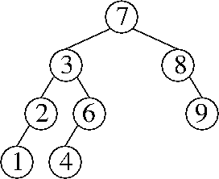
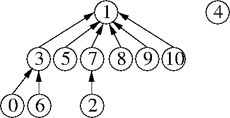
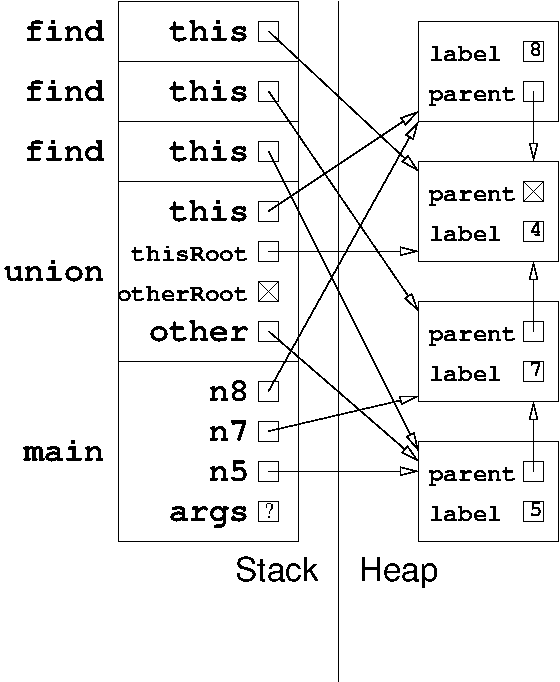

Problem 1. (7 points) A miscellany.
b. f(x) = x2, g(x) = x.
c. Yes, the code compiles without errors. The class LordOfTheRings provides an implementation of the abstract method makeStory in the Java interface Twilight. The two declarations of makeStory have matching signatures, except for the different parameter names (which are irrelevant); but their prototypes match too, so they are compatible.
d. Change the compression function so that it divides the hash code by 8 before compressing.
e. We accepted two answers: an explanation that no throws declaration is required, or throwing OddException. The former answer is correct, but the latter answer might be correct with a Java compiler whose flow analysis is not as smart.
Problem 2. (10 points) Trees.
a. A correct example is any splay tree with at least four keys in which you call find(x) and the key in the root node is x.
b. 
c. The node y is in the subtree rooted at x's right child.
d. Θ(k logk n), which can also be written Θ(k log n / log k).
e. 
f.
[5 15]
/ | \
[3] [8 13] [22]
/ \ / | \ / \
[1] [4] / | \ [17 19 20] [28]
[6 7] [10] [14]
[5 15]
/ | \
[3] [8 13] [19 22]
/ \ / | \ / | \
[1] [4] / | \ [17 18] [20] [28]
[6 7] [10] [14]
Problem 3. (13 points) Sorting.
a.
4 7 8 5 1 0 9 2 6 3
4 7 8 5 3 0 9 2 6 1
0 7 8 5 3 4 9 2 6 1
0 1 8 5 3 4 9 2 6 7
0 1 8 5 3 4 9 2 7 6
0 1 2 5 3 4 9 8 7 6
0 1 2 5 3 4 6 8 7 9
0 1 4 5 3 2 6 8 7 9
0 1 2 5 3 4 6 8 7 9
0 1 2 3 5 4 6 8 7 9
0 1 2 3 4 5 6 8 7 9
0 1 2 3 4 5 6 8 9 7
0 1 2 3 4 5 6 7 9 8
0 1 2 3 4 5 6 7 8 9
b. 1 + n / 2.
c.
20002 12002 202 2 2210 210 20021 12021 122
20002 2 20021 122 202 210 12002 12021 2210
2 122 202 210 2210 12002 12021 20002 20021
d.
Insertion sort: 2
Selection sort: k
Quicksort (array-based): k
Radix sort: p
e. First, sort the u unsorted integers with mergesort or heapsort. This takes O(u log u) time. Then merge them into a single array with the merging step of mergesort. This takes O(s + u) time.
Problem 4. (5 points) Amortized and randomized analysis.
a. Let one “dollar” be a constant unit of time sufficient to construct an object of constant length or to collect a garbage object during garbage collection. Thus, the actual cost of these operations is $1.
Each time we construct an object, we charge an amortized cost of $2, of which $1 is deposited in the bank. When garbage collection runs, its running time is $1 for each garbage object, which we deduct from the bank balance.
At any time, the total number of dollars in the bank is equal to the number of objects in memory. It is easy to see that both an object creation and a garbage collection maintain this invariant: an object creation increases the number of dollars and objects by one; a garbage collection decreases the number of dollars and objects by the number of garbage objects. Therefore, the bank balance never goes below zero.
An operation whose actual cost is f(n) dollars can create at most c f(n) objects, where c is a constant. We charge an amortized cost of (c + 1) f(n) dollars for the operation, of which $c f(n) is deposited in the bank; therefore, we deposit at least $1 for each object created. It follows that the amortized running time is in O(f(n)).
(Note: this answer is way more wordy than a correct answer would need to be.)
b. Suppose that the cost of inserting the nth item into a heap is 1 + log n dollars, and suppose that the cost of removeMin on an n-item heap is 1 + log n dollars. We charge an amortized cost of 2 + 2 log n dollars for each insert operation and save it in the bank to pay for a subsequent removeMin operation. Then, we can charge an amortized cost of zero for each removeMin. At any time, the total number of dollars in the bank is n + ∑n log i. It's almost obvious how to show that the accounting always satisfies this claim.
c. The crucial observation is that the analysis for this question is exactly the same as the analysis of quicksort in Lecture 38.
To justify this, observe that the first integer we insert into the binary search tree plays exactly the same role as the pivot in quicksort. It becomes the root, and it is equally likely to be the smallest key, the second smallest, the third smallest, …, or the largest.
With probability at least 0.5, it is a “good” root: neither of the root's two children's subtrees contain more than three-quarters of the keys. By the same reasoning, every node in the binary search tree is a “good” root of its subtree with probability at least 0.5.
Let D(n) be a random variable equal to the depth of an arbitrary key in a random n-node binary search tree. By the same derivation in Lecture 38,
E[D(n)] ≤ 2 log4/3 n.Problem 5. (9 points) The heap and the stack.

Problem 6. (6 points) Building a sibling-based game tree data structure.
In the solution below, the three lines of added code near the bottom (in bold) are the necessary lines. The three lines of added code near the top are mere niceties…though they would be required in C, so it's a good habit to include them anyway.
public GameTreeNode chooseMove(boolean side) {
GameTreeNode node = new GameTreeNode(); // My best move and my treenode
GameTreeNode reply = null; // Opponent's best reply
node.parent = null;
node.nextSibling = null;
if (the current Grid is full or has a win) {
node.move = null;
node.score = this.score();
node.firstChild = null;
return node;
}
if (side == COMPUTER) {
node.score = -2147483648;
} else {
node.score = 2147483647;
}
for (each legal move m) {
perform move m; // Modifies "this" Grid
reply = chooseMove(! side); // Opponent's best reply
undo move m; // Restores "this" Grid
if (((side == COMPUTER) &&
(reply.score > node.score)) ||
((side == HUMAN) &&
(reply.score < node.score))) {
node.move = new String();
node.score = reply.score;
}
reply.parent = node;
reply.nextSibling = node.firstChild;
node.firstChild = reply;
}
return node;
}